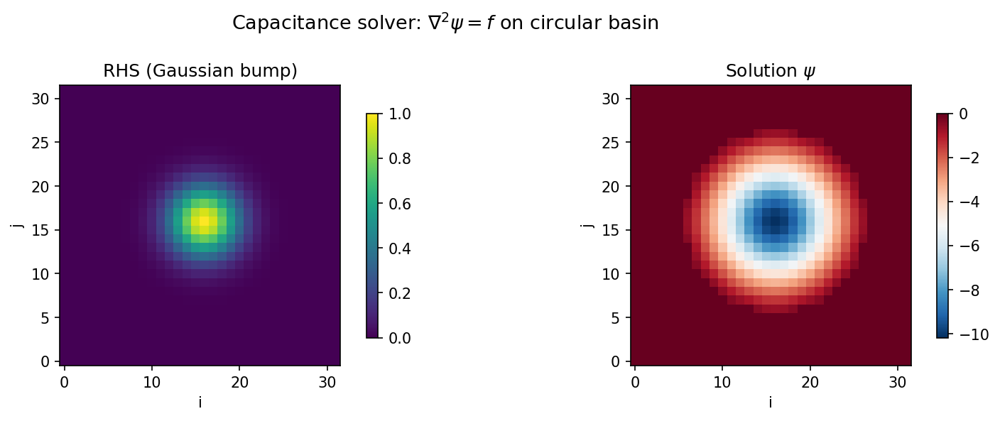
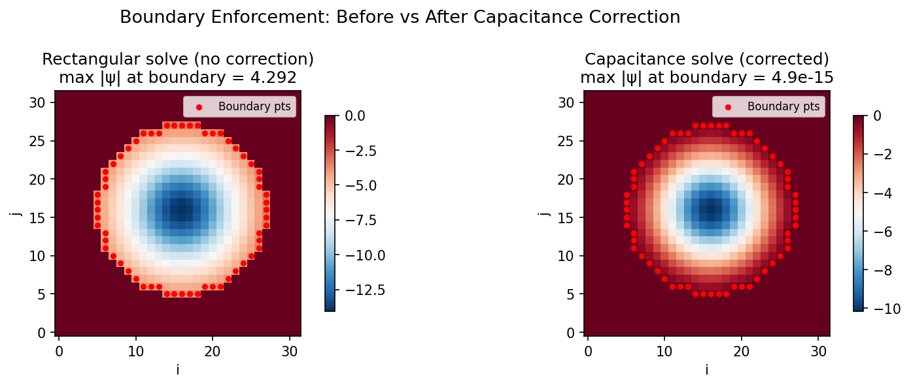

The Capacitance Matrix Method¶
The spectral solvers (DST, DCT, FFT) are fast and elegant, but they require rectangular domains. Many physical problems — ocean basins with coastlines, rooms with pillars, flow around obstacles — have irregular boundaries defined by a mask. The capacitance matrix method (Buzbee, Golub & Nielson, 1970) extends any fast rectangular solver to masked domains by computing a correction based on boundary Green's functions. The key insight is that the correction involves only the boundary points, so its cost is modest relative to the full rectangular solve.
1. Problem Statement¶
We wish to solve the screened Poisson (Helmholtz) equation on an irregular domain:
where:
- \(\Omega \subset R\) is an irregular subdomain of a rectangle \(R = [0, L_x] \times [0, L_y]\)
- \(\Omega\) is defined by a binary mask \(M\): \(M[j,i] = 1\) inside (wet), \(M[j,i] = 0\) outside (dry)
- Boundary condition: \(\psi = 0\) at all inner-boundary points (where wet cells border dry cells)
- \(\lambda \geq 0\) is the Helmholtz parameter (\(\lambda = 0\) gives the Poisson equation)
The challenge is that DST, DCT, and FFT solvers can only invert the operator \(L = \nabla^2 - \lambda\) on the full rectangle \(R\), not on the masked subdomain \(\Omega\).
Why not just zero out dry cells?
Simply setting \(f = 0\) outside \(\Omega\) and solving on \(R\) does not enforce \(\psi = 0\) at the irregular boundary. The rectangular solve has no knowledge of the mask geometry, so \(\psi\) will generally be nonzero at inner-boundary points. The capacitance matrix method provides the systematic correction needed to enforce the boundary condition exactly.
2. The Key Idea¶
The method proceeds in two conceptual steps:
Step 1 — Rectangular solve. Solve on the full rectangle, ignoring the mask:
This is fast — \(O(N_y N_x \log(N_y N_x))\) via a spectral solver — but \(u\) generally violates \(\psi = 0\) at the inner-boundary points.
Step 2 — Boundary correction. Subtract a linear combination of Green's functions to enforce the boundary condition:
where \(g_k = L_R^{-1} e_{b_k}\) is the Green's function (rectangular domain response to a unit impulse at boundary point \(b_k\)), and the weights \(\alpha_k\) are chosen so that:
This yields a linear system for the correction weights:
where \(C\) is the capacitance matrix, \(\boldsymbol{\alpha}\) is the vector of correction weights, and \(\mathbf{u}_B\) is the vector of uncorrected values at the boundary points.
3. Inner-Boundary Detection¶
The inner-boundary points are the wet cells that are 4-connected to at least one dry cell. Formally:
where \(\mathcal{N}_4(j,i) = \{(j\pm1, i), (j, i\pm1)\}\) is the 4-connected neighborhood.
Detection algorithm:
- Compute the exterior mask: \(E = \lnot M\)
- Dilate \(E\) with a cross-shaped structuring element (the 4-connected kernel):
- The inner boundary is the intersection: \(\mathcal{B} = \text{dilate}(E, K) \cap M\)
Offline computation
Inner-boundary detection uses scipy.ndimage.binary_dilation, which is a standard
NumPy/SciPy operation. This is performed once during the offline setup phase and
is not JIT-traced by JAX. The result is a set of index pairs \((j_b, i_b)\) for
\(b = 1, \ldots, N_b\).

4. Green's Functions¶
For each boundary point \(b_k = (j_k, i_k)\), we solve:
where \(e_{b_k}\) is the unit impulse array (all zeros except a one at position \((j_k, i_k)\)). The solution \(g_k\) is a full \(N_y \times N_x\) array representing the response of the rectangular domain to a point source at \(b_k\).
Computing the Green's functions requires \(N_b\) rectangular solves — this is the expensive part of the offline setup. However, each solve is independent and can be batched or parallelized.
The Green's functions are stored as a matrix:
where row \(k\) is the flattened Green's function \(g_k\). This matrix enables efficient matrix-vector products during the online solve.
Memory cost
The Green's function matrix \(G\) has \(N_b \times N_y \times N_x\) entries. For a \(256 \times 256\) grid with \(N_b = 200\) boundary points, this is approximately \(200 \times 65{,}536 \approx 13\) million entries (\(\sim\)100 MB in float64). For larger grids, this can become the dominant memory cost.
5. The Capacitance Matrix¶
The capacitance matrix \(C \in \mathbb{R}^{N_b \times N_b}\) is defined by:
That is, the \((k, l)\) entry is the value of Green's function \(g_l\) evaluated at boundary point \(b_k\).
Physical interpretation: \(C[k,l]\) quantifies how much a unit source at boundary point \(b_l\) affects the solution at boundary point \(b_k\). The matrix encodes the mutual interaction between all pairs of boundary points, mediated by the rectangular-domain Green's function.
Key properties:
- \(C\) is \(N_b \times N_b\) — small when the boundary is thin relative to the domain
- \(C\) is symmetric if \(L_R\) is self-adjoint (as it is for \(\nabla^2 - \lambda\))
- \(C\) is typically well-conditioned for the Helmholtz operator with \(\lambda > 0\)
- \(C\) is pre-inverted during offline setup: \(C^{-1} = \text{inv}(C)\), costing \(O(N_b^3)\)
6. The Online Solve¶
Given a right-hand side \(f\), the solution \(\psi\) is computed in four steps:
| Step | Operation | Cost |
|---|---|---|
| 1. Rectangular solve | \(u = L_R^{-1} f\) | \(O(N_y N_x \log(N_y N_x))\) |
| 2. Sample boundary | \(\mathbf{u}_B = u[j_b, i_b]\) | \(O(N_b)\) |
| 3. Correction weights | \(\boldsymbol{\alpha} = C^{-1} \, \mathbf{u}_B\) | \(O(N_b^2)\) |
| 4. Subtract correction | \(\psi = u - G^\top \boldsymbol{\alpha}\) | \(O(N_b \cdot N_y N_x)\) |
The final result is then masked: \(\psi \leftarrow \psi \odot M\) to ensure the solution is identically zero outside \(\Omega\).
Total online cost: \(O(N_y N_x \log(N_y N_x) + N_b \cdot N_y N_x)\)
JIT-compatible
All four steps of the online solve use pure JAX operations (spectral transforms,
array indexing, matrix-vector products) and are fully compatible with jax.jit.
The pre-computed arrays (\(C^{-1}\), \(G\), boundary indices) are stored as static
fields of an equinox.Module, so the solver can be JIT-compiled, vmapped, and
differentiated.

7. Complexity Analysis¶
| Phase | Time Complexity | Memory |
|---|---|---|
| Offline: Green's functions | \(O(N_b \cdot N_y N_x \log(N_y N_x))\) | \(O(N_b \cdot N_y N_x)\) for \(G\) |
| Offline: \(C\) inversion | \(O(N_b^3)\) | \(O(N_b^2)\) for \(C^{-1}\) |
| Online: rectangular solve | \(O(N_y N_x \log(N_y N_x))\) | \(O(N_y N_x)\) working memory |
| Online: correction | \(O(N_b \cdot N_y N_x)\) | \(O(N_y N_x)\) working memory |
For typical irregular domains, the number of boundary points scales as:
so the correction step costs \(O\!\left((N_y N_x)^{3/2}\right)\), which is usually subdominant to the \(O(N_y N_x \log(N_y N_x))\) spectral solve for moderate grid sizes.
When does the correction dominate?
For very fine grids or domains with long, fractal-like boundaries (large \(N_b\)), the \(O(N_b \cdot N_y N_x)\) correction step can dominate the total cost. In such cases, consider using iterative solvers (conjugate gradient) instead.
8. Choice of Base Solver¶
The rectangular solver \(L_R^{-1}\) can use any of the three spectral transform types. The choice affects the boundary conditions on the rectangle \(R\), not on the irregular domain \(\Omega\) (those are enforced by the capacitance correction):
| Base solver | Transform | Rectangle BC | Notes |
|---|---|---|---|
"fft" |
Fast Fourier Transform | Periodic on \(R\) | Good default; correction handles actual BCs |
"dst" |
Discrete Sine Transform | Dirichlet (\(\psi = 0\)) on \(\partial R\) | Already enforces \(\psi = 0\) at rectangle edges, so fewer inner-boundary points near \(\partial R\) |
"dct" |
Discrete Cosine Transform | Neumann (\(\partial_n \psi = 0\)) on \(\partial R\) | Less common for this application |
In practice, all three choices produce the same solution on \(\Omega\) — the capacitance correction compensates for the difference in rectangular boundary conditions. The choice of base solver affects \(N_b\) slightly:
- DST tends to produce fewer inner-boundary points near the rectangle edges (since \(\psi = 0\) is already enforced there), leading to a smaller capacitance matrix.
- FFT may produce slightly more boundary points near the edges but is often faster per solve due to optimized FFT implementations.
9. Limitations and When to Use Alternatives¶
The capacitance matrix method is powerful but has clear trade-offs:
Strengths:
- Exact enforcement of boundary conditions (to machine precision)
- Fast online solves — amortizes the offline cost over many repeated solves
- Fully compatible with JAX transformations (JIT, vmap, grad)
- Simple implementation built on existing spectral solvers
Limitations:
- Memory: The Green's function matrix \(G\) grows as \(N_b \times N_y N_x\). For large domains with long boundaries, this can require gigabytes of storage.
- Dense inversion: The \(O(N_b^3)\) cost of inverting \(C\) is acceptable for \(N_b \lesssim 1{,}000\) but becomes problematic for very fine meshes with extensive irregular boundaries.
- Static geometry: The capacitance matrix must be recomputed if the mask changes. Not suitable for problems with evolving boundaries.
Alternatives:
| Method | Memory | Per-solve cost | Best for |
|---|---|---|---|
| Capacitance matrix | \(O(N_b \cdot N_y N_x)\) | \(O(N_y N_x \log(N_y N_x))\) | Moderate domains (\(N_b < 500\)), many repeated solves |
| Preconditioned CG | \(O(N_y N_x)\) | \(O(k_{\text{iter}} \cdot N_y N_x)\) | Large irregular domains, one-off solves |
| Geometric multigrid | \(O(N_y N_x)\) | \(O(N_y N_x)\) | Very large problems, optimal scaling |
Rule of thumb
Use the capacitance matrix when \(N_b < 500\) and you need many repeated solves (e.g., time-stepping a PDE). Use conjugate gradient for large domains, one-off solves, or when memory is constrained. Use multigrid for the largest problems where optimal \(O(N)\) scaling is required.
10. References¶
-
Buzbee, B.L., Golub, G.H. & Nielson, C.W. (1970). "On Direct Methods for Solving Poisson's Equations." SIAM Journal on Numerical Analysis, 7(4), 627--656.
-
Proskurowski, W. & Widlund, O. (1976). "On the Numerical Solution of Helmholtz's Equation by the Capacitance Matrix Method." Mathematics of Computation, 30(135), 433--468.
-
Hockney, R.W. (1970). "The Potential Calculation and Some Applications." Methods in Computational Physics, 9, 135--211.